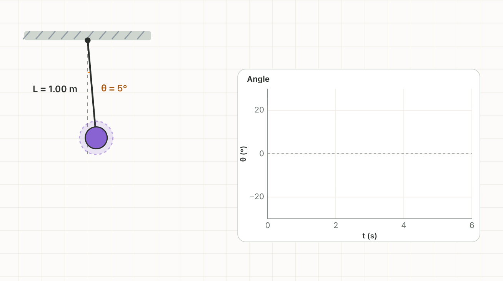
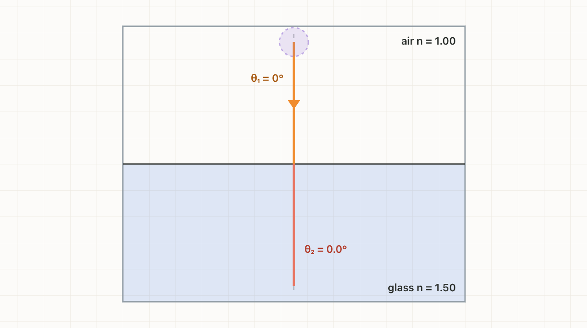
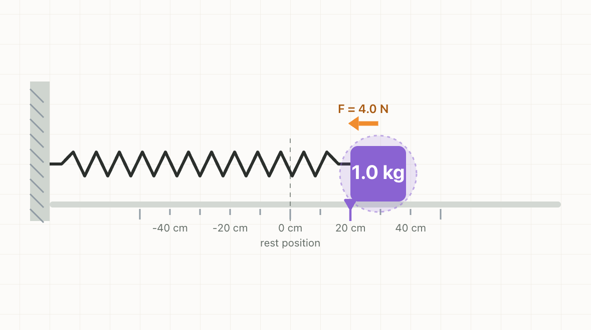
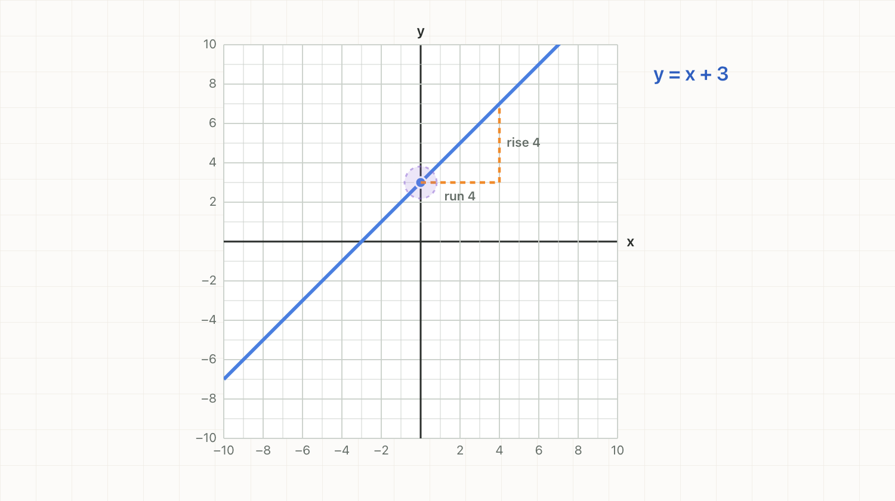
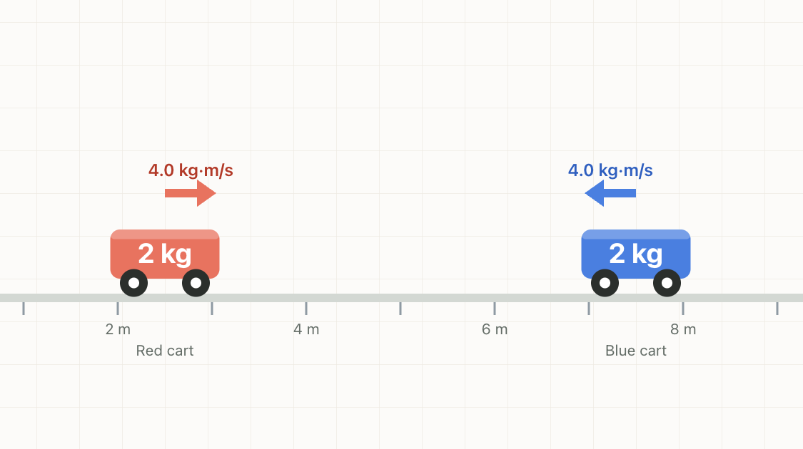
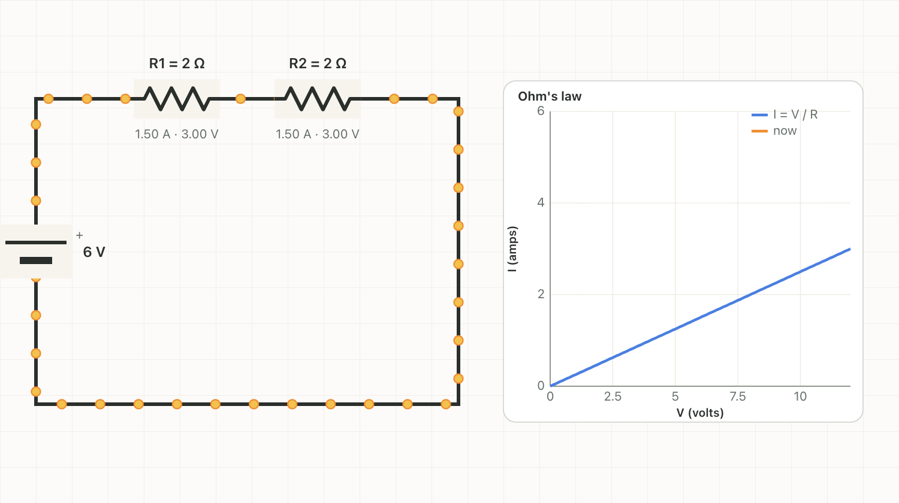

Edu Lab
Create a lessonFree demo server: the first visit after a quiet spell can take about a minute to wake up.
Try the example lessons

The Pendulum's Period
High school · Drag the bob to set the angle.

Snell's Law at Glass
High school · Swing the incoming ray by its end.

Hooke's Law with a Spring
High school · Pull the block along the ruler.

Slope and Y-Intercept Explorer
Middle school · Drag the y-intercept and a point on the line.

Momentum and Collisions
High school · Set masses and velocities, then run the collision.

Ohm's Law with Series Resistors
High school · Change the voltage and watch the charges and the graph.